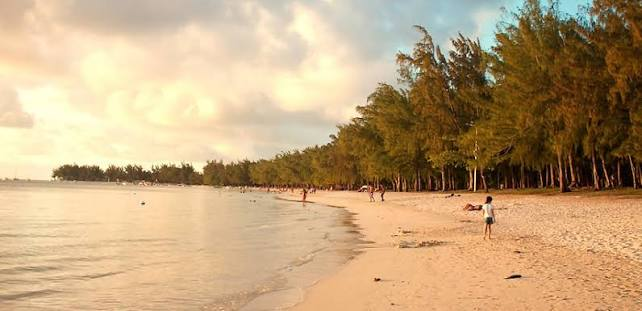
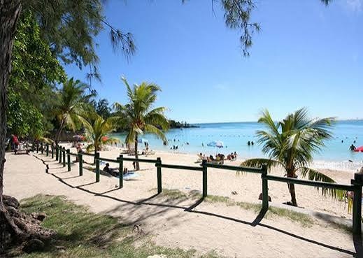

Mauritius is very well known for its beaches. Many foreigners come specifically to relax under the sun of our beaches.
But, what makes them stand out?


Mauritius' beaches are very well kept. Authorities keep the beaches clean and even locals who enjoy the beaches often do their best to keep the beaches in good conditions.